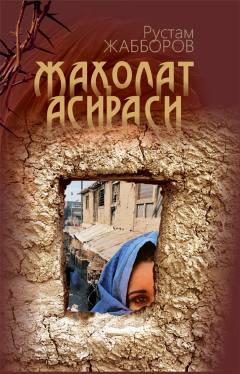

JABegona yurtda baxt izlab, qiyinchiliklarga duch kelgan qizning ta'sirli qismati.
Ushbu qissa o'z baxtini begona yurtlardan izlab, turli qiyinchiliklarga duch kelgan va hayoti izdan chiqqan Mahzuna ismli qizning achchiq qismati haqida hikoya qiladi. Asar inson irodasi, oilaviy muhit va noto'g'ri tanlovlar oqibatlari haqida mulohaza yuritishga undaydi.